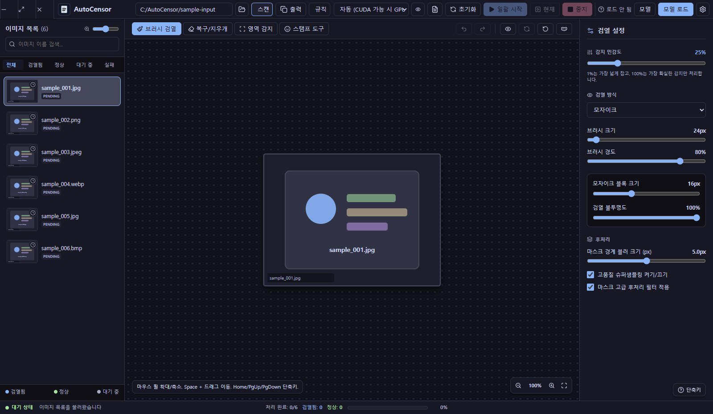
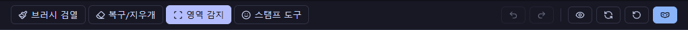
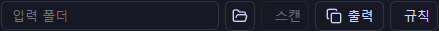
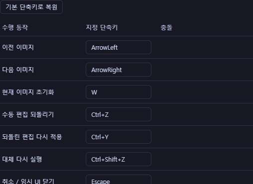

▣
작업 흐름 한눈에
단계를 눌러 화면이 어떻게 바뀌는지 확인하세요.
Manual · 전체 사용법
폴더 선택부터 자동 저장까지, 앱 화면과 단축키를 기준으로 정리했습니다. 화면은 앱 작업 화면 예시이며, 설명용 다이어그램만 따로 표시했습니다. 기준은 릴리스 패키지(AutoCensoR · CPU 전용)입니다.

단계를 눌러 화면이 어떻게 바뀌는지 확인하세요.
상단의 '입력 폴더'에서 입력 폴더를 선택합니다. 폴더 안의 이미지가 왼쪽 목록에 채워지고 ‘대기 중(PENDING)’으로 표시됩니다. 좌측 탭(전체·검열됨·정상·대기 중·실패)으로 상태별로 추릴 수 있습니다.

우측 상단 모델 로드를 누릅니다. 로드 전에는 ‘로드 안 됨’으로 표시되고, 로드 후에는 자동 감지가 준비됩니다. 권장 모델은 아래 가이드를 참고하세요.

'일괄 시작'(F5) 버튼으로 폴더 전체를 일괄 처리합니다. 감지된 영역에 보호 방식(모자이크·블러·흑백·단색)이 적용되고, 하단에 처리 완료 개수와 소요 시간이 표시됩니다.

도구 막대에서 브러시 검열(B)를 선택해 원하는 영역을 직접 칠해 가립니다. 과하게 칠한 곳은 복구/지우개(X)로 되돌립니다. 브러시 크기는 [ / ]로 조절하고, 한 장을 처음 상태로 되돌리려면 W를 누릅니다.

영역 감지(D) 상태에서 오른쪽 버튼으로 사각 영역을 드래그하면, 그 범위를 한 번에 보호합니다. 브러시로 칠하기 번거로운 큰 영역에 편리합니다.

퀵마스크(A)는 보호 오버레이를 보며 보정할 때 사용합니다. 5로 퀵마스크 오버레이를 빠르게 켜고 끌 수 있고, Tab은 원본 미리보기와 대조 확인에 사용합니다.

단색·흑백·블러·모자이크를 같은 보호 영역에 적용합니다. 방식 선택은 “어떻게 가릴지”만 정하며, 감지 범위나 영역 크기를 바꾸지 않습니다. 아래는 같은 영역에 방식만 바꾼 예시 이미지입니다(실제 앱 화면이 아닙니다).
설정(톱니) → 저장/검열/성능/모델/UI/단축키/개인정보 탭에서 동작을 조정합니다. 단축키는 도움말로 확인하거나 설정에서 직접 바꿀 수 있습니다.


| 키 | 동작 |
|---|---|
| B | 브러시 검열 |
| X | 복구/지우개 |
| D | 영역 감지 |
| E | 스탬프 도구 |
| A | 퀵마스크 |
| 5 | 퀵마스크 오버레이 토글 |
| F5 | 일괄 시작 |
| F9 | 현재 이미지만 검열 |
| W | 현재 이미지 초기화 |
| [ / ] | 브러시 크기 줄이기 / 늘리기 |
| Ctrl+Z / Ctrl+Y | 실행 취소 / 다시 실행 |
| Ctrl+Shift+Z | 대체 다시 실행 |
| ← / → | 이전 / 다음 이미지 |
| Tab | 원본과 대조 확인 |

처리와 보정 결과는 작업을 진행하는 동안 자동으로 적용·저장됩니다. 출력 폴더에 접미사를 붙여 저장되며, 별도의 수동 저장 단계를 누를 필요는 없습니다. 출력 형식·품질·파일명 접미사·출력 폴더는 설정 → 저장에서 바꿀 수 있습니다.